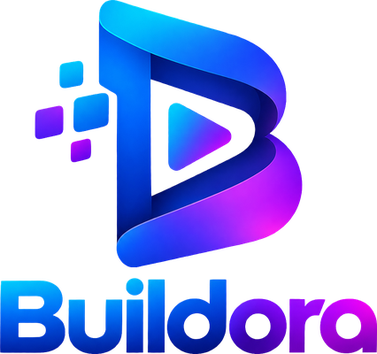

00:00.0 / 00:00.0
سرعة الـ Keyframeاسحب النقطة البيضاء لأعلى لتسريع الحركة عندها ولأسفل لإبطائها • ضغطتان على نقطة تعيدها ×1

مونتاج فيديو كامل داخل جهازك، بدون رفع ملفات وبدون حساب.
يتم التصدير بسرعة التشغيل الحقيقية.
محرر فيديو احترافي يعمل بالكامل على جهازك، بدون إنترنت وبدون حساب.
Space تشغيل • S تقسيم • Del حذف • Ctrl+Z تراجع • M علامة • Ctrl+اسحب = تدوير 3D